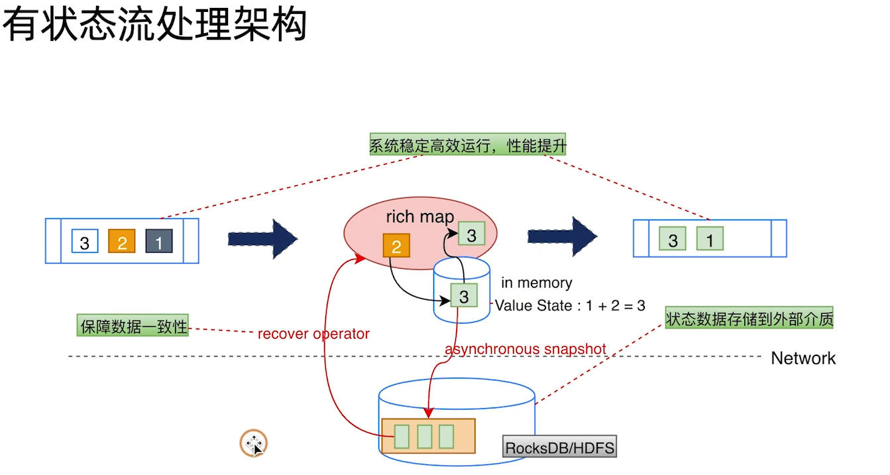

Flink¶
1 应用场景¶
批量计算、流式计算、交互计算、图计算
实时报表、实时监控、流式数据分析、实时数仓
2 相较于其他流式处理引擎¶
数据exactly once；吞吐量大每秒千万级；延迟低毫秒级；易用性有很多API
3 核心特性¶
-
统一的数据处理组件栈（batch, stream, graph, ML）
-
时间概念
- 事件时间（Event Time）真正数据产生时间；
- 接入时间（Ingestion Time）数据通过中间件到达flink，在source operator 里产生；
- 处理时间（Processing Time）算子处理的时间。
-
基于分布式轻量级快照（Snapshot）实现容错，check point保证数据不会丢或重复
-
支持有状态计算
- kv存状态
- 有back end支持大数据量的状态持久化
-
高度灵活的窗口计算
-
带反压的连续流模型
- Flow Control，Sink算子传递控制信息到Source，控制处理速率。
-
基于JVM实现了自己独立的内存管理
- 可超出主内存大小，对对象二进制序列化存储，类似于C对内存的管理。
4 集群架构¶
job-worker结构 * JobManager：管理节点，job管理与Checkpoint协调 * TaskManager：计算资源的提供，每个实例部署在单独的机器上 * Client：解析JobGraph提交给JobManager，监控job执行状态。 Client -> JobManager(Job) -> TaskManager(Task)
JobManager¶
- CheckPoint Coordinator
- JobGraph(逻辑图) -> Excution Graph(物理图)
- Task部署
- RPC(Akka ? Actor system ?)
- Job Dispatch
- 集群资源管理，根据集群部署模式不同有不同的实现
- TaskManager注册与管理
TaskManager¶
- Task Excution (Task slot类似于线程池)
- Shuffle Env
- RPC
- Network Manager（TaskManager之间通信Netty）
- 内存管理
- Slot提供给JobManager
Client¶
解析用户提交的jar，生成JobGraph对象（Code -> Dag有向无环图）
JobGraph¶
- 通过有向无环图（Dag）表达用户的程序
- 不同接口程序的抽象表达
- 客户端和集群之间job描述的载体
5. 分布式流处理模型¶
如何兼顾数据一致性、大规模数据处理、无界乱序处理
DataFlow模型¶
1、数据源（Source）； * 打通外部输入，跟中间件交互（MQ） * 不同的数据源可以按照并行度分成不同的算子
2、转换操作（Operation）；filter transform connect转换成结果
3、数据输出（Sink）。
数据从上一个Operation节点直接push到下一个Operation节点。 节点可以运行在不同的Task线程中，数据在Operation间传递。 数据有shuffle过程，但是是推不是MR的拉。
DataStream API¶
SQL -> Table API -> DataStream / DataSet API -> Stateful Stream Processing
程序结构：
- 设置运行环境
- 配置数据源读取数据
- 进行一系列转换
- 配置数据汇写出
- 提交执行
Watermark¶
用于标记EventTime前进的过程；跟随DataStream的EventTime变动，自身携带timestamp；用于表明较早的事件可能已经到达；本身也是特殊的事件。
数据流顺序（Sorted）的时候可以得到完美的Watermark；
数据流无序的时候通常认为Watermark有一定的无序性：
Watermark = EventTime - maxOutOfOrderness （有新的最大时间戳出现时更新）
LateEvent：迟到事件，时间戳小于当前的WaterMark。后续窗口计算可能会丢掉。
Watermark产生后会随数据流下发，到算子里时会更新算子里的时间。
当EventTime增加时，Watermark跟新（有周期）；当Watermark大于window右边窗口时，执行窗口计算。
WM产生：
- Periodic：根据EventTime产生；
- Punctuated：根据特定事件产生。
Window¶

- Window Assigner
- 将数据流中的元素分配到对应窗口中
- Window Funtion
- 满足窗口触发条件后由Window Funtion进行处理
- 增量计算（Aggregate，Reduce，Fold）：sum，min，max
- 全量计算（窗口内全部一起算）：process
- SideOutupt：流切分，标签化后输出output接口，getSideOutPut(sideOutPutTag)
- 结果体现在状态上
- Trigger将其结果输出
- Window
- TIme
- Sliding 滑动窗口
- 窗口以固定步长（Slide）向前滑动，长度（Window Size）固定
- Slide < Size 数据可以被重复计算
- Slide > Size 数据可能不在任何一个窗口内
- Tumbling 滚动窗口
- 窗口之间不重叠且长度是固定的
- 特殊的滑动窗口 Slide = Size
- Session 会话窗口
- 当一个窗口在大于Session gap的时间内没有接到新的数据，窗口关闭
- Size可变
- Global 全局窗口
- 有所有的数据
- Sliding 滑动窗口
- Count
- TIme
- Window Trigger
- 何时启动 Window Function 以及将窗口内的数据清理
- 触发一次：Processing Time / Water mark 大于窗口结束时间触发；
- 触发多次：固定时间间隔 / Count数量 / 和上次触发的元素Delta计算 / Puring别人触发完后清理
- 何时启动 Window Function 以及将窗口内的数据清理
- Window Evictor
- 数据清除器（可选组件） Count / Time / Delta

图的转换过程¶
pipline -> stream图 -> job图，job作业提交后转换成excute图。
New Source API （流批一体）¶
Bounded File Source
- 每个 Split 是一个文件或文件的一部分；
- SplitEnumerator 列举 除指定文件夹下的全部文件，并逐个发给 reader；
- SourceReader 接收到 splits 后根据 inputFormat 读取数据；
- SourceReader 接收到 NoMoreSplits 消息是，会完成并停止。
Unbounded Streaming File Source
- SplitEnumerator 不会发送 NoMoreSplits 消息；
- 而是周期性的读取 URI/Path 的地址，获取新文件，进而转化为 Splits 发送给 reader。
6. 有状态计算¶
无状态计算：计算和存储分离
有状态计算：计算的中间结果保存在本地

问题：
- 端到端数据一致性如何保证？
- 状态数据如何恢复？
- 状态后端存储如何选择
- 如何snapshot
- 状态如何存储更新
状态分类¶
CheckPoint¶
将算子中的状态数据异步持久化到文件系统中。Chandy-Lamport算法？
JobManager: CheckPoint Coordinator: 触发 Source 节点的 checkpoint（1. 将自己的状态持久化；2. 向下游广播 barrier；3. 完成后通知 coordinator 备份的地址）
CheckPoint Barrier 将 DataStream 切成多个批次，多个 DataStream 对齐。Operator 对齐 barrier 后状态持久化。
Sink 接收到 barrier 后通知 coordinator，checkpoint 过程结束，将元数据持久化。
SavePoint¶
用户主动控制，作业停止前备份，永久存储（CheckPoint停止后会被删除）
7. Fink Table & SQL¶
批流一体，一套SQL运行在流数据和批数据上。
Calcite解析SQL